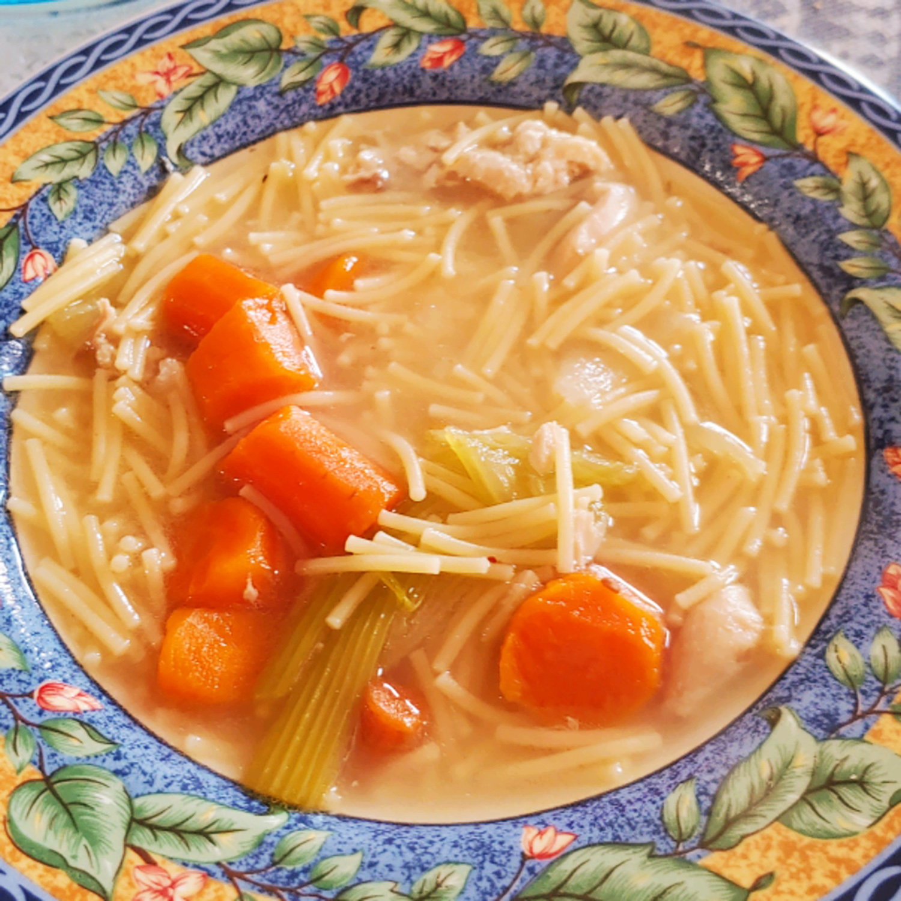

Chicken soup

Chicken soup is a soup made from chicken, simmered in water, usually with various other ingredients. The classic chicken soup consists of a clear chicken broth, often with pieces of chicken or vegetables; common additions are pasta, noodles, dumplings, or grains such as rice and barley. Chicken soup has acquired the reputation of a folk remedy for colds and influenza.
Variations on the flavor are gained by adding root vegetables such as parsnip, potato, sweet potato and celery root; herbs such as parsley and dill; other vegetables such as zucchini, whole garlic cloves, lettuce, or tomatoes; and black pepper. The soup should be brought slowly to a boil and then simmered in a covered pot on a very low flame for one to three hours, adding water if necessary. Saffron or turmeric are sometimes added as a yellow colorant.
Ingredients
- 1 whole chicken
- 4 carrots, halved
- 4 stalks celery, halved
- 1 large onion, halved
- water
- salt and pepper
- 1 teaspoon chicken bouillon granules (optional)
Steps
- Add the raw chicken thighs to a large stockpot, cover with cold water, and bring to a boil. Reduce to medium-low heat and simmer until the chicken is fully cooked. If you’re short on time, skip this step and use your favorite store-bought chicken stock and add shredded rotisserie chicken.
- While you wait for your chicken to finish cooking, cook the vegetables in a separate pot or Dutch oven set over medium heat. Cook the vegetables for 10-15 minutes or until they start to soften. Toward the end, add the salt, black pepper, bay leaves, and garlic (if using).
- Once the chicken is fully cooked, carefully remove the chicken from the pot and strain the broth through a fine-mesh strainer into the same pot containing the vegetables.
- Shred the chicken once it is cool enough to handle. Do not return the chicken to the pot.
- Simmer for 30 minutes, or until the vegetables are fully cooked and tender. In the last 10 minutes, add the shredded chicken and lemon juice and season to taste.